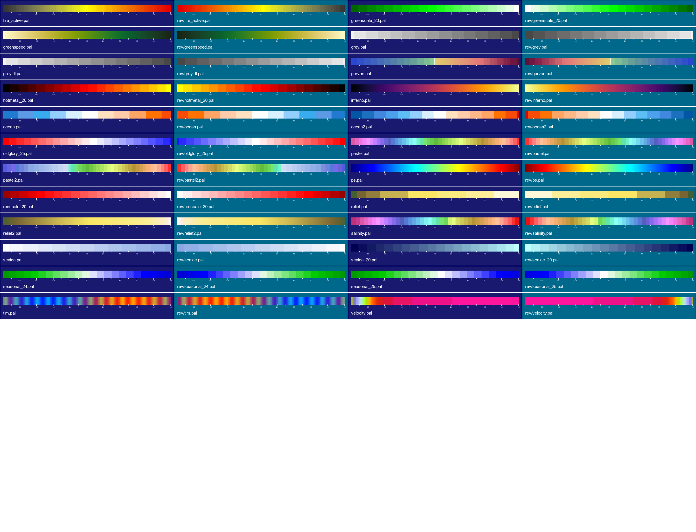
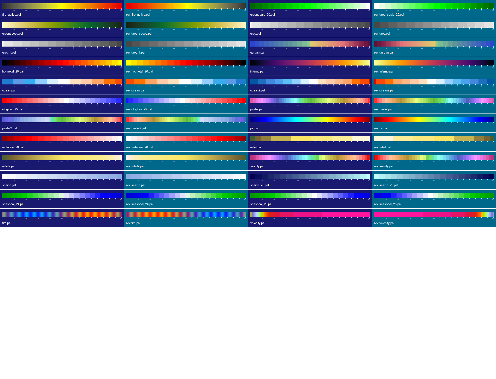

nemosim reads horizontal slices of NEMO ocean model data and produces a bitmap image of the data according to the controls imposed by the command-line arguments. These arguments provide a fair degree of control over the final image including:
nemosim is built using the ImageMagick <http://www.imagemagick.org/> library which provides routines to manipulate images in a multitude of image formats. nemosim restricts output to high quality pngs or jpegs. In order to access font information (for annotations) nemosim needs to have access to an X server. This means the command must be run in a desktop environment where a valid X display is accessible. If “xclock” works then so will nemosim. Despite this minor restriction nemosim is ideally suited for incorporation into scripts thus automating the production of frames for animation.
nemosim will work from a single NetCDF file but the NEMO files do not generally contain the masking fields. Thus to overlay a meaningful land mask the model bathy_level dataset must also be supplied. This is normally called “bathy_level.nc” but each model configuration will have its own dataset. Access to this dataset is determined by:
export NEMOBATHYFILE=/home/Users/me/ORCA025/bathy_level.nc
nemosim can be run with a minimum number of command line arguments and should make sensible choices for most parameters. Access to all settings is provided via command-line arguments for refining images further. For fancier images the list can get quite long and not particularly memorable. Fortunately, nemosim will record the invoking command within the image as a comment field or within a saved map file as a NetCDF global attribute. The creation command for any image can be retrieved using the ImageMagick identify -verbose utility. A shell script utility is provided to run this command and retrieve just the command information in a well formatted manner: $NSIM_ROOT/bin/rdimgcom mynemoimage.png
The full set of command line arguments is:
Usage: nemosim
[-as mapfile|image|cmdfile {}]
-f infile
-o outimage
-d dataset_name
[-usemap transform_mapping_file {}]
[-k k_level] {0}
[-spos colour_scale_position]{0} (0-8 valid)
[-cs colour_file] {pastel.pal}
[-limits data_min data_max]
[-crescale scale_factor_for_colourscale]
[-logsc]
[-f2 infile2]
[-d2 2nd_dataset_name]
[-k2] {0}
[-uv ]
[-diff ]
[-sum ]
[-overlay ]
[-nscombo ]
[-overi overlay_threshold_index] {2}
[-cs2 overlay_colour_file] {seaice.pal}
[-limits2 overlay_data_min overlay_data_max]
[-crescale2 scale_factor_for_overlay_colscale]
[-r i_size j_size] {720 400}
[-high] {1920 1080}
[-medium] {720 400}
[-low] {360 200}
[-sw bottom_left_degrees bottom_left_degrees] {0.0 -90.0}
[-ne top_right_degrees top_right_degrees] {360.0 90.}
[-cenl centreline_longitude] {300.0}
[-no_offset]
[-moll]
[-mcen centre_meridian] {300}
[-icosa]
[-conic]
[-mcen longitude of rotated pole] {300}
[-mlat latitude of rotated pole] {90}
[-ortho]
[-eu1 first_Euler_angle] {90.0}
[-eu2 second_Euler_angle] {90.0}
[-eu3 third_Euler_angle] {180.0}
[-ta offset_translation_angle] {0}
[-td offset_translation_distance] {0}
[-gsize globe_scale_factor] {80}
[-vdist viewpoint_distance] {10}
[-grid lon_spacing lat_spacing] {30. 15.}
[-gridstep lon_dot_spacing lat_dot_spacing] {0.125 0.125}
[-png]
[-transp_bg]
[-transp_fg]
[-jpeg]
[-fg image_foreground_colour]{white}
[-bg image_background_colour]{black}
[-abg alternative image_background_colour]{gray}
[-bfg border_foreground_colour]{white}
[-bbg border_background_colour]{black}
[-margins left right bottom top]{0 0 0 0}
[-Margins left% right% bottom% top%]{spos dependant}
[-smargins left right bottom top]{0 0 0 0}
[-Smargins left% right% bottom% top%] {spos dependant}
[-dateclk clock_radius ck_xpos ck_ypos datestr]
[-logo logo_image_file]
[-lsize logo_width logo_height
[-lpos logo_xpos logo_ypos]
[-annotate xpos ypos label_text]
[-afs annotation-font-size] {11}
[-title title_text]
[-tpos title_xpos title_ypos
[-tjus title_text_justification]
[-tfnt title_font ]
[-tfs title_font_pointsize]{12}
[-stitle scale_title_text]{var_name}
[-stpos scale_title_xpos scale_title_ypos
[-stjus scale_title_text_justification]
[-stitle2 2nd_scale_title_text]{var2_name}
[-stpos2 2nd_scale_title_x 2nd_scale_title_y
[-stjus2 2nd_scale_title_text_justification]
[-stfnt scale_title_font ]
[-stfs title_font_pointsize]{10}
[-sfnt scale_font ]
[-sfs scale_font_pointsize]{9}
[-bathy bathy_level_file]
[-coordf coordinate_file]
[-nomask]
[-bcoord]
[-q]
[-cice]
[-nooverl]
[-xdim longitude_dimension_name]{x}
[-ydim latitude_dimension_name]{y}
[-np omp_num_threads]
[-t netcdf_time_level]
[-box]
[-usemax]
[-usemin]
[-rpt report_level]
[-show]
[-info]
[-verbose]
Formally, only the first three are essential (as indicated by the absence of [] brackets); but even those are not required if making use of the -as option (see section on Command inheritance). Where set, the built-in defaults are shown in {}. Many other defaults will be set dependent on other choices. For examples in the absence of explicit data limits the dataset minimum and maximum vaules will be used. All the other options can be used to override the automatic choices.
Each option is explained in the following sections which include examples for illustration:
Mandatory options
Component options
An optional 2nd compoent dataset which can be combined with the first component dataset to produce either: a sum, difference (1st - 2nd) or a speed (sqrt(1st^2 + 2nd^2)) field.
- [-k2 k_level] {0}
- The level to be extracted from a 3D dataset for the second component. This value should be 0 for 2D datasets.
- [-uv]
- Combine the 2 components as a speed field (sqrt(1st^2 + 2nd^2)). This one works best with the -logsc option.
- [-sum]
- Calculate and plot the sum of the 2 components.
- [-diff]
- Combine the 2 components as a difference field (1st - 2nd).
- [-nscombo]
- Combine the 2 components as a North-South hemisphere composite. The 1st field is plotted in the Northern hemisphere and the 2nd in the Southern hemisphere.
- [-overlay]
Overlay the second dataset on the first. The mechanism is crude and happens in pixelspace but it can be used to overlay fields which overlap only in confined areas. The most useful examples of these are the seaice fields. The named dataset must be present in the original input files.
- [-overi overlay_threshold_index] {2}
- The threshold colour index. Only pixels in the overlay image with a colour index greater than this value will be mapped onto the combined image. Thus the degree of masking achieved by the overlay field is controlled by the combination of the overlay data limits and the overlay threshold index.
- [-cs2 overlay_colour_file] {seaice.pal}
- The colour file applied to the overlay field (monochromatic scales work best)
- [-limits2 overlay_data_min overlay_data_max] {}
- The data range limits for the overlaid field
- [-crescale2 scale_factor_for_2nd_colourscale]
- use the supplied scale factor to rescale the units displayed on the colourscale for the overlaid field.
Apply an orthographic projection. Essentially a “gplot” emulator without the interactivity. For anyone familiar with gplot the next 7 options are the same view controls that are set in gplot’s preview window. Everyone else will soon get the hang of it!
- [-eu1 first_Euler_angle] {90.0}
- E-W rotate in degrees E
- [-eu2 second_Euler_angle] {90.0}
- N-S rotate in degrees N
- [-eu3 third_Euler_angle] {180.0}
- Tilt angle in degrees
- [-ta offset_translation_angle] {0}
- Offset translation angle in degrees (only useful if you need to move the globe from the centre of the image)
- [-td offset_translation_distance] {0}
- Offset translation distance (in globe radii) (only useful if you need to move the globe from the centre of the image)
- [-gsize globe_scale_factor] {80}
- Globe scale factor. Decrease to zoom in; increase to zoom out
- [-vdist viewpoint_distance] {10}
- Viewpoint distance. Decrease to zoom in; increase to zoom out
Apply a logo as determined by the size and placement options
- [-lsize logo_width logo_height]
- The pixel width and height of the logo.
- [-lpos logo_xpos logo_ypos]
- Pixel coordinates of the top lefthand corner of the logo.
Here are some examples with the resultant images:
./nemosim -f ./data/ORCA025_2001m01I.nc -o example1c.png -d isstempe -nomask -spos 3
./nemosim -f ./data/ORCA025_2001m01I.nc -o example2a.png -d isstempe -nomask -spos 3 \
-ortho -eu2 40 -eu1 135 -show -r 400 400
./nemosim -f ./data/ORCA025_2001m01I.nc -o example3a.png -d isstempe -nomask -spos 3 \
-moll -show
A more interesting example that uses many options (click on the thumbnail image to obtain the full-size image):
nemosim -usemap flatglobal_1024x512.mapf \
-f $MEAN_DIR/1987/ORCA0083-N01_19871231d05U.nc \
-o ./globaluv.jpg -k 24 \
-d vozocrtx \
-f2 $MEAN_DIR/1987/ORCA0083-N01_19871231d05V.nc \
-d2 vomecrty \
-uv \
-logsc \
-limits -1.25 0.0 \
-t 1 \
-bcoords \
-sw 0.0 -90. -ne 360. 90. \
-no_offset \
-r 1024 512 \
-cs blue2white.pal
Finally some composites that illustrate the available palettes:
 

{kind=link}
{kind=link}
{kind=link}
{kind=link}
{kind=link}